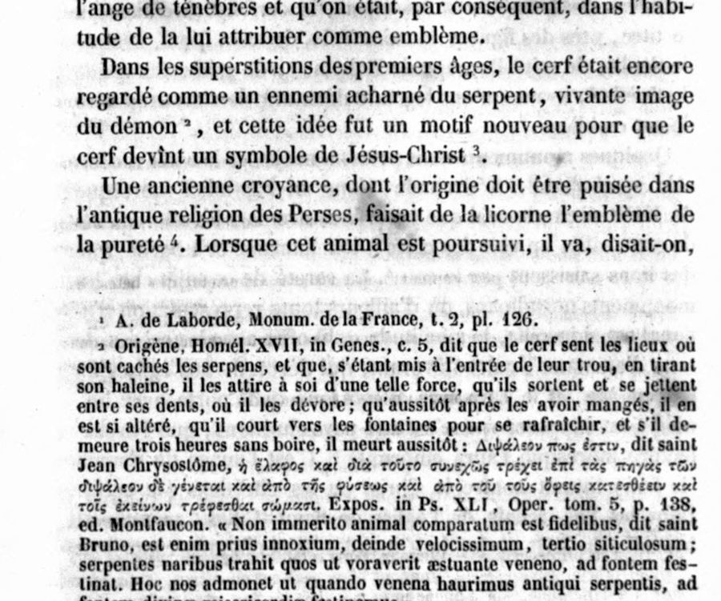
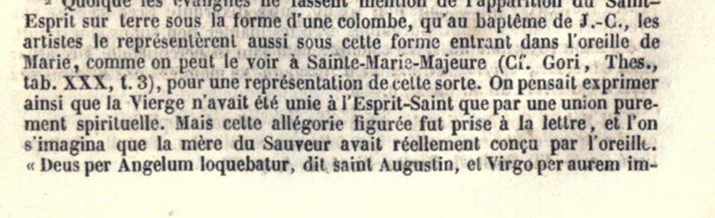
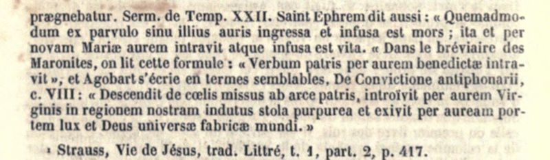
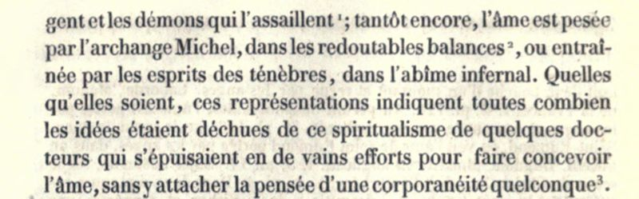
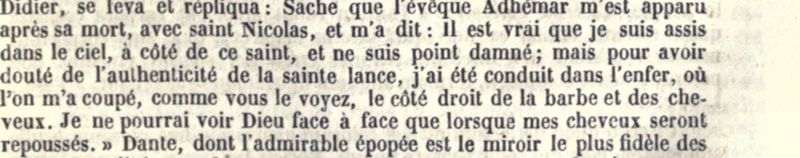
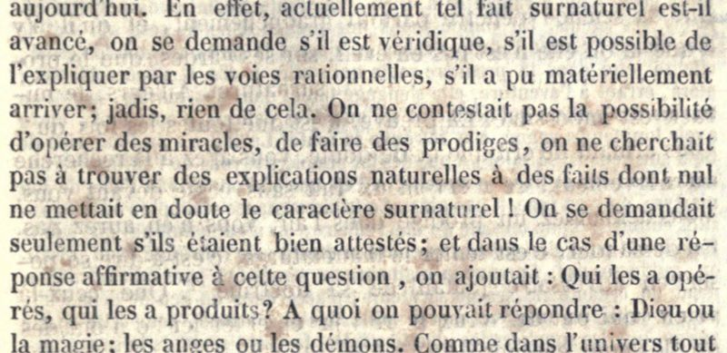
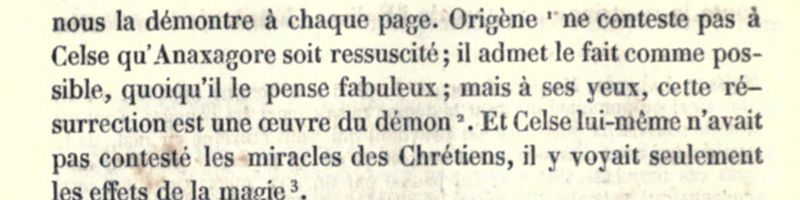
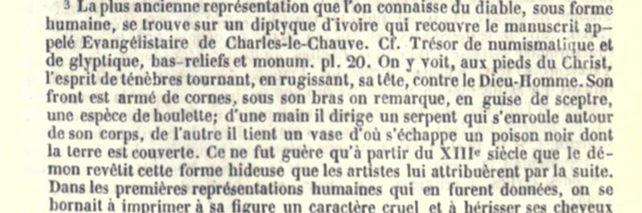

“Un ennemi acharné du serpent”: the stag (pp. 174–178)
French: Paris 1843, p. 176, scan, with Maury’s note 2, and p. 178, scan. Highlighted: what Lecky draws on.

[p. 174] … stags really carrying the instrument of the Passion on their heads … The stag … not only stood emblematically for Jesus Christ, but was also the image of the soul thirsting for the divine word, from the words of the psalm (41 [42]:1): “As the hart panteth after the water brooks, so panteth my soul after thee, O God.”
[p. 176] In the superstitions of the first ages, the stag was also regarded as a relentless enemy of the serpent, the living image of the demon, and this idea was a new reason for the stag to become a symbol of Jesus Christ.
Note 2: Origen (Homily XVII on Genesis, c. 5) says that the stag smells out the places where serpents are hidden, and that, putting itself at the mouth of their hole and drawing its breath, it pulls them towards itself with such force that they come out and throw themselves between its teeth, where it devours them; that as soon as it has eaten them it is so thirsty that it runs to the springs to refresh itself, and if it stays three hours without drinking it dies at once … “Not without reason is the animal compared to the faithful,” says St Bruno … “it draws serpents out with its nostrils, and when it has swallowed them, burning with the poison, it hurries to the spring. This teaches us that when we drink the venom of the old serpent we should hurry to the fountain of divine mercy.”
[p. 178] … The prophetic virtue already attributed to this animal will have given these stories more credit, their marvels being more than enough bait for the credulity of the common people. The saints will have been turned into huntsmen, like St Eustace and St Hubert, and the mysterious stag will have become the Saviour who appeared to them in that form.
Original French
[p. 174, from the OCR] … des cerfs portant réellement sur leur tête l’instrument de la passion … Le cerf … non seulement exprimait emblématiquement Jésus-Christ, mais était encore l’image de l’âme altérée de la parole divine, d’après ces paroles du psaume (XLI, 1): « Quemadmodum desiderat cervus ad fontes aquarum, ita desiderat anima mea ad te, Deus. »
[p. 176] Dans les superstitions des premiers âges, le cerf était encore regardé comme un ennemi acharné du serpent, vivante image du démon, et cette idée fut un motif nouveau pour que le cerf devînt un symbole de Jésus-Christ.
Note 2: Origène, Homél. XVII, in Genes., c. 5, dit que le cerf sent les lieux où sont cachés les serpens, et que, s’étant mis à l’entrée de leur trou, en tirant son haleine, il les attire à soi d’une telle force, qu’ils sortent et se jettent entre ses dents, où il les dévore; qu’aussitôt après les avoir mangés, il en est si altéré, qu’il court vers les fontaines pour se rafraîchir, et s’il demeure trois heures sans boire, il meurt aussitôt … « Non immerito animal comparatum est fidelibus, dit saint Bruno … serpentes naribus trahit quos ut voraverit aestuante veneno, ad fontem festinat. Hoc nos admonet ut quando venena haurimus antiqui serpentis, ad fontem divinae misericordiae festinemus. »
[p. 178] … La vertu prophétique déjà attribuée à cet animal aura accrédité davantage ces histoires dont le merveilleux était plus qu’un appât suffisant pour la crédulité du vulgaire. Les saints auront été transformés en chasseurs, comme saint Eustache et saint Hubert, et le cerf mystérieux sera devenu le Sauveur qui, sous cette forme, leur était apparu.
Maury’s note also quotes the same lore from John Chrysostom’s exposition of Psalm 41 (in Greek); this edition has not checked Origen, Chrysostom or Bruno.
Conceived through the ear (pp. 179–180, note 2)
French and Latin: Paris 1843, pp. 179–180, Maury’s note 2, scans n218–n219.


Although the gospels mention the Holy Spirit appearing on earth in the form of a dove only at the baptism of Jesus Christ, artists represented him in that form also entering Mary’s ear, as may be seen at Santa Maria Maggiore (compare Gori, Thesaurus, plate XXX, vol. 3) for a representation of the kind. They meant to express in this way that the Virgin had been united to the Holy Spirit only by a purely spiritual union. But this figured allegory was taken literally, and people imagined that the Saviour’s mother had really conceived through the ear. “God spoke by the angel”, says St Augustine, “and the Virgin was made pregnant through the ear” (Sermon de tempore 22). St Ephrem says too: “As death entered and was poured in through the little opening of that one’s [Eve’s] ear, so through the new ear of Mary life entered and was poured in.” In the breviary of the Maronites one reads this formula: “The Word of the Father entered through the ear of the blessed one”, and Agobard exclaims in like terms (On the correction of the antiphonary, c. 8): “He came down from heaven, sent from the citadel of the Father, he entered through the ear of the Virgin into our region, clothed in a purple robe, and went out by the golden gate, the light and God of the whole fabric of the world.”
Original French
Quoique les évangiles ne fassent mention de l’apparition du Saint-Esprit sur terre sous la forme d’une colombe, qu’au baptême de J.-C., les artistes le représentèrent aussi sous cette forme entrant dans l’oreille de Marie, comme on peut le voir à Sainte-Marie-Majeure (Cf. Gori, Thes., tab. XXX, t. 3), pour une représentation de cette sorte. On pensait exprimer ainsi que la Vierge n’avait été unie à l’Esprit-Saint que par une union purement spirituelle. Mais cette allégorie figurée fut prise à la lettre, et l’on s’imagina que la mère du Sauveur avait réellement conçu par l’oreille. « Deus per Angelum loquebatur, dit saint Augustin, et Virgo per aurem impraegnabatur. » Serm. de Temp. XXII. Saint Ephrem dit aussi: « Quemadmodum ex parvulo sinu illius auris ingressa et infusa est mors; ita et per novam Mariæ aurem intravit atque infusa est vita. » Dans le bréviaire des Maronites, on lit cette formule: « Verbum patris per aurem benedictæ intravit », et Agobard s’écrie en termes semblables, De Convictione [sic] antiphonarii, c. VIII: « Descendit de cœlis missus ab arce patris, introivit per aurem Virginis in regionem nostram indutus stola purpurea et exivit per auream portam lux et Deus universæ fabricæ mundi. »
Lecky’s ch. III note 30 (“Maury, Légendes Pieuses, pp. 179, 180”) takes from this footnote the Maronite formula, Agobard’s words and the remark that “similar expressions had been employed in the Early Church by St. Augustine and St. Ephrem”; the pages match. Two points: the Latin Lecky gives as Agobard’s stops at “in regionem nostram”, as highlighted; and the sermon “de tempore” 22 that Maury ascribes to Augustine is one of the sermons long printed among Augustine’s works, whose authorship has not been checked here. Maury prints the title of Agobard’s treatise as “De Convictione antiphonarii”; it is usually called De correctione antiphonarii. Lecky’s window “in one of the museums of Paris”, from Langlois, is not on these pages.
Angels carrying the sun, the moon and the star (pp. 17–18)
French: Paris 1843, pp. 17–18, scans n56–n57; from the OCR only, not read on the images.
The angels, who were later turned into pure spirits busy serving God and carrying his orders to the earth, were at first only the personified agents of nature … [p. 18] … above the cross on which Christ dies one sees the sun and the moon, each carried by an angel. According to some Fathers of the Church, notably St John Chrysostom, and certain apocryphal gospels, it was an angel who carried the star that announced to the shepherds the birth of Mary’s son. … Storms, winds and rains were the work of the evil spirits, the demons.
Original French
Les anges qui, plus tard, ont été transformés en de purs esprits occupés à servir Dieu et à transmettre ses ordres à la terre, n’ont été d’abord que les agents personnifiés de la nature … [p. 18] … on voit au-dessus de la croix où expire le Christ, le soleil et la lune, portés chacun par un ange. Suivant quelques pères de l’Église, notamment saint Jean-Chrysostôme, et certains évangiles apocryphes, c’est un ange qui portait l’étoile qui annonça aux bergers la naissance du fils de Marie. … Les tempêtes, les vents, les pluies furent l’œuvre des mauvais génies, des démons.
This is the context of Lecky’s note 113 (“Angels were sometimes represented … bearing along the stars (and especially the Star of Bethlehem) in their hands”), and of his statement in the text that atmospheric changes were believed to be “effected by angels”. See also Roccamora on angels carrying the stars.
Pictures taken literally: souls carried to heaven, and a bishop’s singed beard (pp. 125–127)
French: Paris 1843, pp. 125–127, text and notes, scans n164–n166.

[p. 125, note] … All these representations kept up the popular belief that souls are really carried to heaven by the angels after death … In a great many lives of saints we hear of souls that were seen rising to heaven in this way, in heavenly company. St Antony met on his road the soul of the blessed Paul rising to heaven amid the angels, prophets and apostles. … Here plainly is a story that has its source in the representations we have spoken of above.
[p. 126] … at other times again the soul is weighed by the archangel Michael in the dreadful scales, or dragged by the spirits of darkness into the abyss of hell. Whatever they are, these representations all show how far ideas had fallen from the spiritualism of a few doctors who wore themselves out in vain efforts to make people conceive of the soul without attaching to it any thought of bodily form.
[p. 127, note] … But whatever the doctors’ opinions on this point, it is certain that the people never pictured the soul except in bodily form … A story told by Raymond of Aguilers … proves beyond dispute how coarse the medieval conception of the soul was: “… Then a priest named Didier stood up and answered: Know that Bishop Adhémar appeared to me after his death, with St Nicholas, and said to me: It is true that I am seated in heaven beside this saint, and am not damned; but for having doubted the authenticity of the Holy Lance I was taken to hell, where, as you see, they cut off the right side of my beard and hair. I shall not see God face to face until my hair has grown again.”
Original French
[p. 125, note] … Toutes ces représentations entretenaient la croyance populaire que les âmes sont réellement portées au ciel par les anges après leur mort … Dans un grand nombre de vies de saints, il est question d’âmes que l’on vit ainsi monter au ciel, dans la céleste compagnie. Saint Antoine rencontra en chemin l’âme du bienheureux Paul qui montait au ciel, au milieu des anges, des prophètes et des apôtres. … Voilà évidemment un fait qui prend sa source dans les représentations dont nous avons parlé ci-dessus.
[p. 126] … tantôt encore, l’âme est pesée par l’archange Michel, dans les redoutables balances, ou entraînée par les esprits des ténèbres, dans l’abîme infernal. Quelles qu’elles soient, ces représentations indiquent toutes combien les idées étaient déchues de ce spiritualisme de quelques docteurs qui s’épuisaient en de vains efforts pour faire concevoir l’âme, sans y attacher la pensée d’une corporanéité quelconque.
[p. 127, note] … Mais quelles qu’aient été à cet égard les opinions des docteurs, il est certain que le peuple ne se représenta jamais l’âme autrement que sous une forme corporelle … Un fait rapporté par Raymond d’Agiles … prouve, au reste, d’une manière irrécusable la grossièreté de la conception de l’âme au moyen-âge: « … Alors un prêtre, nommé Didier, se leva et répliqua: Sache que l’évêque Adhémar m’est apparu après sa mort, avec saint Nicolas, et m’a dit: Il est vrai que je suis assis dans le ciel, à côté de ce saint, et ne suis point damné; mais pour avoir douté de l’authenticité de la sainte lance, j’ai été conduit dans l’enfer, où l’on m’a coupé, comme vous le voyez, le côté droit de la barbe et des cheveux. Je ne pourrai voir Dieu face à face que lorsque mes cheveux seront repoussés. »

Lecky’s ch. III note 168 supports his sentence that in the middle ages “every spiritual conception was materialised” and that “the realisations of the people were all derived from painting, sculpture, or ceremonies that appealed to the senses”. That is Maury’s argument on these pages: the pictures of souls carried up by angels in a sheet (linceul), weighed by St Michael or dragged down by devils were taken as fact. Lecky’s neighbouring examples (St Antony seeing the soul of Ammon carried to heaven, the soul of Marc borne up in a napkin) are not the ones Maury gives here; Maury’s Antony sees the soul of St Paul the Hermit. The pages match. Maury’s Adhémar story comes from Raymond of Aguilers’ chronicle of the First Crusade, which he quotes in Guizot’s French translation.
Nobody asked whether, only who: God or the demons (pp. 239–242)
French: Paris 1843, pp. 239 and 241–242, scans n278–n281; pp. 240–241 are mostly a long footnote.

[p. 239] … Nowadays, when some supernatural fact is put forward, people ask whether it is true, whether it can be explained by rational means, whether it could physically have happened; formerly, nothing of the kind. No one disputed that miracles could be worked and prodigies performed; no one looked for natural explanations of facts whose supernatural character nobody doubted! People asked only whether they were well attested; and if the answer was yes, they went on: Who worked them, who produced them? To which the answer could be: God or magic; the angels or the demons.
[pp. 241–242] … The study of their [the Fathers’] writings shows it on every page. Origen does not dispute with Celsus that Anaxagoras rose from the dead; he admits the fact as possible, though he thinks it fabulous; but in his eyes this resurrection is a work of the demon. And Celsus himself had not disputed the miracles of the Christians; he saw in them only the effects of magic.
Original French
[p. 239] … En effet, actuellement tel fait surnaturel est-il avancé, on se demande s’il est véridique, s’il est possible de l’expliquer par les voies rationnelles, s’il a pu matériellement arriver; jadis, rien de cela. On ne contestait pas la possibilité d’opérer des miracles, de faire des prodiges, on ne cherchait pas à trouver des explications naturelles à des faits dont nul ne mettait en doute le caractère surnaturel! On se demandait seulement s’ils étaient bien attestés; et dans le cas d’une réponse affirmative à cette question, on ajoutait: Qui les a opérés, qui les a produits? A quoi on pouvait répondre: Dieu ou la magie; les anges ou les démons.
[pp. 241–242] … L’étude de leurs écrits nous la démontre à chaque page. Origène ne conteste pas à Celse qu’Anaxagore soit ressuscité; il admet le fait comme possible, quoiqu’il le pense fabuleux; mais à ses yeux, cette résurrection est une œuvre du démon. Et Celse lui-même n’avait pas contesté les miracles des Chrétiens, il y voyait seulement les effets de la magie.

Lecky’s ch. II note 3 attaches “some admirable remarks on this subject in Maury, Légendes Pieuses, pp. 240–244” to his sentence that Christians and pagans “each admitted the reality of the miracles of the other, though ascribing them to the agency of demons”. That is the argument of these pages, which begins on p. 239. Maury’s footnote 2 on p. 242 quotes the Scottish physician John Abercrombie to the same effect: “It is, indeed, a remarkable circumstance that the earliest writers against Christianity ascribe the miraculous event to the power of sorcery or magic, but never attempt to call them in question as matters of fact.” Maury’s “Anaxagore” is as printed; the figure Origen discusses in that part of Against Celsus is probably Aristeas of Proconnesus (not checked). Pp. 243–244 were not read.
When the Devil became hideous (p. 136, note 3)
French: Paris 1843, p. 136, Maury’s note 3, scan n175.

The oldest known representation of the Devil in human form is on an ivory diptych covering the manuscript called the Gospel-book of Charles the Bald. … At Christ’s feet one sees the spirit of darkness turning his head, roaring, against the God-Man. His forehead is armed with horns; under his arm, by way of a sceptre, is a kind of shepherd’s crook; with one hand he guides a serpent coiled round his body, with the other he holds a vase from which pours a black poison that covers the earth. It was hardly before the thirteenth century that the demon took on the hideous form that artists gave him afterwards. In the first human representations of him, artists confined themselves to giving his face a cruel look and making his hair stand on end …
Original French
La plus ancienne représentation que l’on connaisse du diable, sous forme humaine, se trouve sur un diptyque d’ivoire qui recouvre le manuscrit appelé Évangélistaire de Charles-le-Chauve. … On y voit, aux pieds du Christ, l’esprit de ténèbres tournant, en rugissant, sa tête, contre le Dieu-Homme. Son front est armé de cornes, sous son bras on remarque, en guise de sceptre, une espèce de houlette; d’une main il dirige un serpent qui s’enroule autour de son corps, de l’autre il tient un vase d’où s’échappe un poison noir dont la terre est couverte. Ce ne fut guère qu’à partir du XIIIe siècle que le démon revêtit cette forme hideuse que les artistes lui attribuèrent par la suite. Dans les premières représentations humaines qui en furent données, on se bornait à imprimer à sa figure un caractère cruel et à hérisser ses cheveux …
Lecky’s ch. I note 52 (“about the thirteenth century, the representations of Satan underwent a corresponding change, and became both more terrible and more grotesque (Maury, Légendes Pieuses, p. 136)”) matches the date and the page. “Grotesque” is Lecky’s word; Maury says “hideous”.
The soul as a little naked man (p. 124)
French: Paris 1843, p. 124, scan; from the OCR only, not read on the image.
So little by little material representation took hold of the most spiritual ideas, those least accessible to the senses, and clothed them in a coarse and purely human form. The soul itself did not escape this sad influence of anthropomorphism: it was soon shown in images as a little man, without sex, to express that the difference between man and woman lies only in the body and that at bottom they are one being; naked, to show that after death the soul is stripped of every earthly and sinful covering. Sometimes this little figure is seen, hands joined, escaping from the mouth of the dead person and carried to God in a shroud by the angels …
Original French
Ainsi peu à peu la représentation matérielle s’emparait des idées les plus spirituelles et les plus inaccessibles aux sens, pour les revêtir d’une forme grossière et purement humaine. L’âme elle-même, l’âme n’échappait pas à cette triste influence de l’anthropomorphisme; on la vit bientôt représentée dans les images, sous la figure d’un petit homme, sans sexe, pour exprimer que la différence entre l’homme et la femme ne tient qu’au corps, et qu’ils sont au fond un être identique; nu, pour faire voir qu’après la mort, l’âme est dépouillée de toute enveloppe terrestre et vicieuse. Tantôt on voit cette petite figure, les mains jointes, s’échapper de la bouche du défunt et portée vers Dieu, dans un linceul, par les anges …
This is the page behind Lecky’s note 169 and his statement in the text that the soul was pictured materially; Didron’s parallel, the souls of the blest as small naked figures in the hand of God, is on the Didron page.
Further down the rabbit hole
Sources that Lecky cites in the notes next to the ones that cite this page.
- Didron, Iconographie chrétienneHow medieval art pictured Christ the Judge
- Middleton, A Free Inquiry into the Miraculous PowersMiddleton’s exorcists and what Lecky altered in quoting him
- Roccamora, Tractatus de cometisDo comets kill kings? A Roman treatise of 1670 weighs the arguments
- Tertullian, De baptismoLecky’s two water passages checked against Migne
- Cudworth, The True Intellectual System of the Universe, with Mosheim’s notesDid the early Fathers think the soul had a body? Origen, ghosts and Mosheim’s notes
- Augustine, De civitate DeiSeventy reports, not miracles, and a town, not a province


Backlinks
Every place in Rationalism in Europe that links to this page (generated automatically when the site is built).